Enabling single sign-on (SSO) using Keycloak Authentication
Enabling SSO in an MT environment involves Keycloak providing identity authentication brokering between WebSphere OIDC (Connections application side server) and possibly multiple customer IdPs. This SSO is accomplished by setting up a trust relationship between the Connections server and Keycloak using the IBM WebSphere OpenID Connect Relying Party Trust Association Interceptor (OIDC Relying Party TAI). Keycloak is then used as an intermediary to broker authentication to the customer IdP.
Enabling this single sign-on OIDC authentication between Keycloak and Connections involves completing multiple steps:
Brokering authentication using hint (you broker each org to their respective Identity Provider)
Configuring KeyCloak as OIDC Provider for Connections
Updating WebSphere to support single sign-on (SSO) between Keycloak with Connections
Configuring Connections
For background on OIDC (OpenID Connect), you can see these topics in the IBM documentation for WebSphere Application Server:
OpenID Connect overview https://www.ibm.com/docs/en/was/8.5.5?topic=users-openid-connect-overview -Configuring an OpenID Relying Party
Brokering Authentication via Hint
The following image shows a possible MT configuration with three customer IdPs each using a separate protocol OIDC, SAML and a social id.
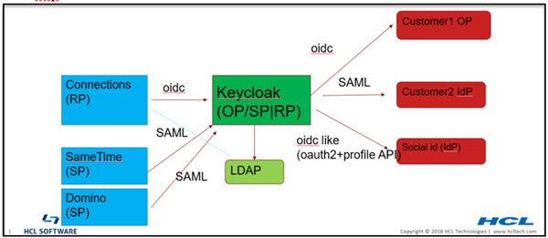
Note: The dotted line from connections to LDAP is not required for authentication. It may be used for group support from application level. Although it should really be done using keycloak APIs, the existing code may be doing a direct LDAP call.
In MT, most of customers have their own IdP to authenticate users so Connections can SSO to customers own applications that use the same IdP.
Keycloak Identity Providers Example
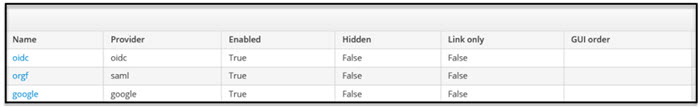
By default, a user would have to pick which login to use. However we can remove this page by redirect the user to their org's IdP.
This can be done by using kc_idp_hint.
The redirect URL contains a unique organization string which allows creating a rewrite rule to map between the organization and the organization IdP.
For example,
https://\
{KK}/realms/{RM}/protocol/openid-connect/auth?xxxxx&redirect_uri=https%3A%2F%2Fmtdemo1- orgc.cnx.cwp.pnp-hcl.com%3A443%2Foidcclient_apps%2Fkeycloak&yyyyy
to
https://\{KK}
/realms/{RM}/protocol/openid-connect/auth?xxxxx&redirect_uri=https%3A%2F%2Fmtdemo1-orgc.cnx.cwp.pnp-
hcl.com%3A443%2Foidcclient_apps%2Fkeycloak&yyyyy&kc_idp_hint=mtdemo1-orgc
Example implementation:
if ($arg_redirect_uri ~ ^(https.*connmt-orge.*)){
rewrite ^(/auth/.*)/Azure-OIDC/(\w+\.?.*$) $1/Azure-OIDC/$2?kc_idp_hint=google break;
}
if ($arg_redirect_uri ~ ^(https.*connmt-orgf.*)){
rewrite ^(/auth/.*)/Azure-OIDC/(\w+\.?.*$) $1/Azure-OIDC/$2?kc_idp_hint=connmt-orgf break;
}
Configuring KeyCloak as an OIDC provider for Connections
Configuring Keycloak as the OIDC provider for Connections involves these steps
Create a realm
Within that realm create a client for the Connections web application (client)
Configure the callback urls
Configure hardcoded realmName claim via client scope mapper property
Setup Keycloak connection to LDAP
Create additional clients for Oauth applications mobile, desktop plugins, rte and ee
Creating Connections Realm in Keycloak
In the Keycloak admin portal Select realm > Add realm
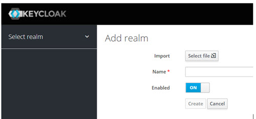
Once created set the realm token properties as appropriate. Realm > Realm Settings > Tokens
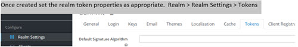
To avoid token time-out issues set the properties Access Token Lifespan and Access Token Lifespan For Implicit Flow to 1 minute less than the WebSphere LTPA timeout. In the following example the WebSphere LTPA timeout is set to 720 minutes (12 hours)
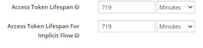
Creating the Main Keycloak Client for Connections
The realm contains the Keycloak OIDC clients which provide the authentication for Connections entities. The main OIDC client is the client for the Connections web application.
The realm contains the Keycloak OIDC clients which provide the authentication for Connections entities. The main OIDC client is the client for the Connections web application.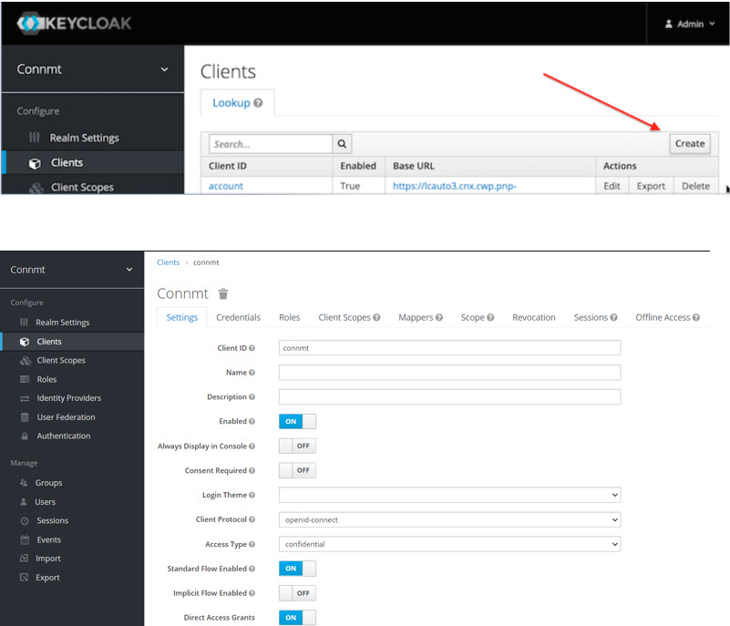
As part of the client, you define the valid callback urls for each organization.
Example: Add the following Valid Redirect URIs to the client for two organizations orga and orgb
https://_orga/homepage
https://_orga/oidcclient/keycloak
https://_orgb/homepage
- https://_orgb/oidcclient/keycloak
where the value keycloak is the value specified in the provider_1.identifier property used later in the WebSphere TAI. It is found in the WebSphere Admin Console Security > Global security > Trust association > Interceptors > com.ibm.ws.security.oidc.client.RelyingParty
Name = realmName
Mapper Type = Hardcoded claim
Token claim name = realmName
Claim value = <your_realm_name>
Client ID: connections_social_mobile
Enabled: On
Client Protocol: openid-connect
Access Type: public
Standard Flow Enabled: On
Implicit Flow Enabled: Off
Direct Access Grants Enabled: Off
Valid Redirect URIs: com.ibm.ibmscp://com.ibm.mobile.connections/token
Access Token Lifespan: 60
Proof Key for Code Exchange Code Challenge Method: S256
Update the Mobile client (connections_social_mobile) with redirect URIs
For each org supported, add the Outlook Add-in redirect URL to the ‘Valid Redirect URIs’ field. The format should be
https://<org addin URI>/auth/callback. Examples:https://orga.my.server.com/outlook-addin/auth/callbackhttps://orgb.my.server.com/outlook-addin/auth/callback
Update the ‘Web Origins’ field to allow CORS origins from the redirect URIs. Either explicitly specify each redirect URI or specify ‘+’ to allow all the redirect URIs from the ‘Valid Redirect URIs’ field.
Update Realm settings to make sure X-Frame-Options includes “frame-ancestors 'self’”. This allows the Outlook Add-in to be loaded into the iFrame.
Install WebSphereOIDCRP.ear (Note: In multi-cluster environment it is installed to each cluster)
Configure the WebSphere OIDC Trust Association Interceptor (TAI) (Note: The special steps in multi-cluster environment)
Configure dynacache for TAI JNDI
Set custom
provider_1.excludedpathFilter:*/survey/.*,/surveys/.*,/ibm/console,/ibm/console/.*,/profiles/dsx/.*,/communities/dsx/.*,/dm,/dm/atom/seedlist,/dm/atom/communities/feed,/activities/service/atom2/forms/communityEvent,/communities/recomm/handleEvent,/communities/calendar/handleEvent,/profiles/seedlist/myserver*`Note: The services path may not be the same per deployment.
To support JWT as access token for oauth set
provider_1.verifyIssuerInIat=trueconnmt is the client id that was configured for the KeyCloak main Connections web client from before.
connections_social_mobile is the client id for Connections Mobile
To support
Mobile/oauth2client use of the LTPA session cookie setprovider_1.setLtpaCookie=trueExample: Deploying WebSphereOIDCRP.ear to each JVM/cluster with unique context root.
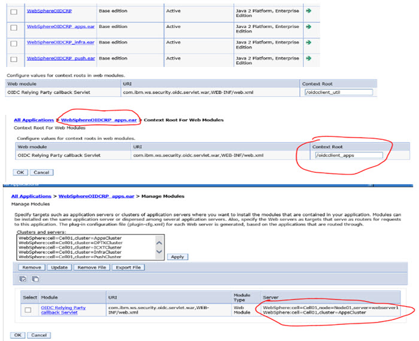Configure WebSphere TAI properties multi-cluster Configure
.ibm.ws.security.oidc.client.RelyingPartyTAI with a provider for each cluster and set the custom propertiesinterceptedPathFilterto the corresponding cluster valuecallbackServletContextPathto a unique value (to be updated in Keycloak main CNX web client)
Note: All properties values are the same for each provider except the
interceptedPathFilterandcallbackServletContextPathExample: For a 4 cluster medium Connections deployment setting interceptPathFilter: (Note: in your environment the app may be deployed on different clusters, therefore please adjust accordingly)
provider_1.interceptedPathFilter:
/activities/.,/blogs/.,/dogear/.,/files/.,/forums/.,/metrics/.,/metricssc/,/mobile/.,/connections/filesync/.,/connections/filediff/.,/mobileAdmin/.,/storageproxy/.,/wikis/.*provider_2.interceptedPathFilter:
/connections/bookmarklet/.,/connections/oauth/.,/connections/resources/.,/connections/config/.,/communities/.,/connections/proxy/.,/help/.,/xcc/.,/selfservice/.,/news/.,/profiles/.,/search/.,/socialsidebar/.,/touchpoint/.,/connections/thumbnail/.,/connections/opengraph/.,/oauth2/.,/connections/opensocial/.provider_3..interceptedPathFilter:
/homepage/.,/moderation/.,/connections/rte/.,/connections/webeditors/.provider_4.interceptedPathFilter:
/push/.*The screenshot below shows the TAI custom properties (provider_1) for the oidcclient_apps cluster , repeat creating the same properties for provider_2, provider_3, provider_4 with appropriate values for interceptedPathFilter and callbackServletContextPath.
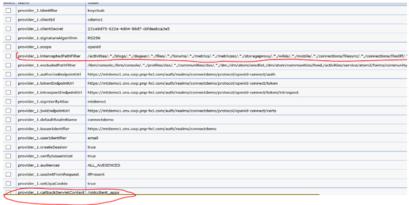Enable custom dynacache by following these steps:
In oidc RP TAI properties add the custom property jndiCacheName= services/cache/OpenidRpCache : 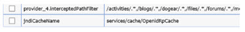
Create a new object cache instance with the JNDI name matching the one used in the TAI property above and set -- replication Domain: ConnectionsReplicationDomain -- replication Type: both push and pull
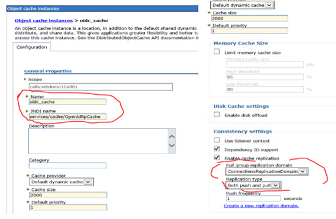In each cluster (Apps, Infra, Util, Push) make sure that cache replication is enabled and uses the ConnectionsReplicationDomain. To check go to the Admin Console Servers > server types > WebSphere Application Servers > <server_name> > Container Services > Dynamic cache service
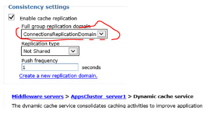
In the multi-cluster case since we defined new servlet context roots in step #2, the Keycloak web/main client Valid Redirect URIs need to be updated.Example: Based on our earlier Keycloak client definition update the valid callbacks as follows Go to Keycloak Admin Portal > realm > client > Valid Redirect URIs
https://<connections host>_orga/homepagehttps://<connections host>_orga/oidcclient_apps/keycloakhttps://<connections host>_orga/oidcclient_util/keycloakhttps://<connections host>_orga/oidcclient_infra/keycloakhttps://<connections host>_orga/oidcclient_push/keycloakhttps://<connections host>_orgb/homepagehttps://<connections host>_orgb/oidcclient_apps/keycloakhttps://<connections host>_orgb/oidcclient_util/keycloakhttps://<connections host>_orgb/oidcclient_infra/keycloakhttps://<connections host>_orgb/oidcclient_push/keycloakNote: oidcclient_apps, oidcclient_util, oidcclient_infra, oidcclient_push are the values of the provider_1-4.callbackServletContex custom properties in our example.
Set the AuthType to OAuth:
<AuthType>OAuth</AuthType>Set these values to the authorization and token endpoint URLs for your KeyCloak realm.--
<OAuthAuthorizationURL>https://<server>/auth/realms/<keycloak_realm>/protocol/openid-connect/auth</OAuthAuthorizationURL>--<OAuthTokenURL>https://<server>/auth/realms/<keycloak_realm>/protocol/openid-connect/token</OAuthTokenURL>
Creating a Mapper for realmName
Note: The claim value equals connmt in our example
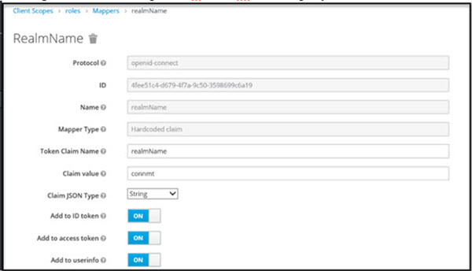
Configuring KeyCloak to connect to an LDAP
Creating Additional Keycloak Clients
See information and screenshots below for guidance.
Mobile Client The following creates the Keycloak client for mobile there is additional Connections configuration required to complete enabling mobile access (see later section).
Set the following fields as indicated:
Under Advanced Settings, set:
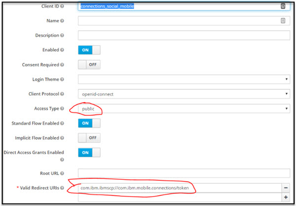
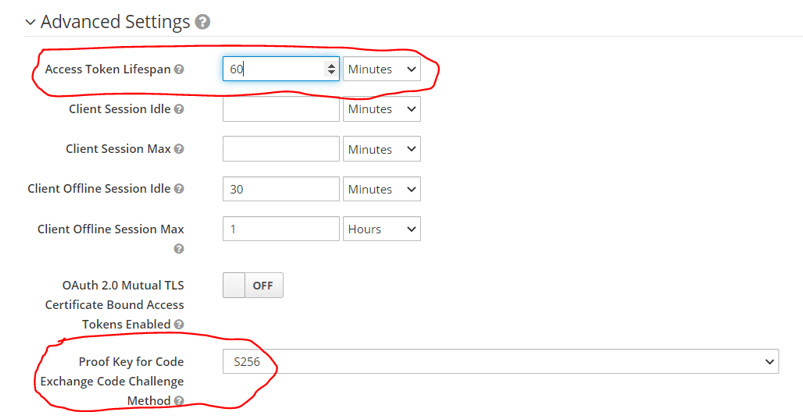
Desktop Plugins
Starting in plugins release 21.07, the Mac and WIndows Desktop plugins use the same Keycloak client as Mobile (connections_social_mobile). Add the following redirect URI to the Valid Redirect URIs list of the Mobile client
Valid Redirect URIs: com.ibm.ibmscp://com.ibm.desktop.connections
If you are supporting older desktop plugins (pre-21.07), you will need add another Keycloak client with ClientID conn-dsk-plugin. Other than ClientID, use the same settings as the mobile Keycloak client. Add the following redirect URI to the Valid Redirect URIs list of the conn-dsk-plugin client: Valid Redirect URIs: 'com.ibm.ibmscp://com.ibm.desktop.connections'
Outlook Add-in
If you are enabling the Connections Outlook Add-in for your users, you will need to make updates to Keycloak to enable login from the add-in.
RTE
Create a client named conn-rte and add Valid Redirect URI for each organization. For example
https:// <server_orga>/connections/rte/connect
hhttps:// <server_orgb>/connections/rte/connect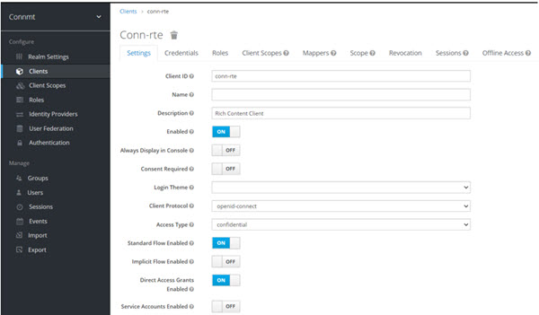
EE
Create a client named conn-ee-kc and add Valid Redirect URI for each organization. For example
https:// <server_orga>/connections/opensocial/gadgets/oauth2callback
https:// <server_orgb>/connections/opensocial/gadgets/oauth2callback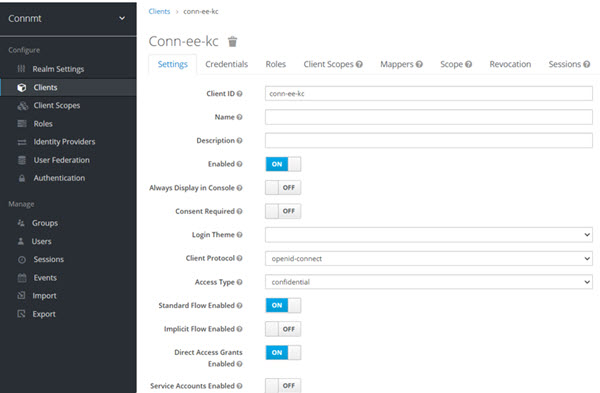
SSO between Connections, SameTime and Domino can be done via Keycloak clients
As before create a client for all the applications in the same realm. SameTime Ckient Use IdP initiated Post binding with signed assertion:
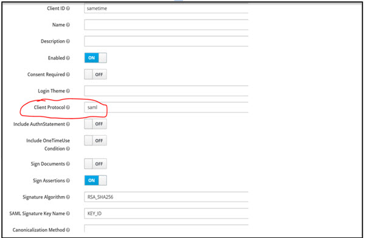
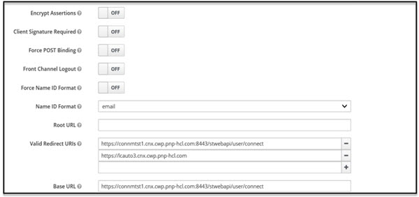
Configuring WebSphere as OIDC Relying Party
Keycloak as an OIDC IDP provides authentication for the Connections applications installed in WebSphere. Configuring WebSphere as the OIDC Relying Party involves a few basic steps.
Install WebSphereOIDCRP.ear In a single cluster environment follow the instruction in step #13 Install the OpenID Connect application“ of the WebSphere Documentation. Refer to Configuring an OpenID Connect Relying Party See below if installing in multi-cluster environment, you will install the OIDC application on each cluster.
Update Custom Properties: WebSphere Admin Console go to Security > Global security > Custom properties and remove com.ibm.websphere.security.InvokeTAIbeforeSSO if it is set
Disable Oauth TAI: Since we are using Keycloak clients disable the com.ibm.ws.security.oauth20.tai.OAuthTAI filter. Go to Security > Global security > Trust association > Interceptors > com.ibm.ws.security.oauth20.tai.OAuthTAI and set the provider_1.filter name to some dummy value so it won't intercept any requests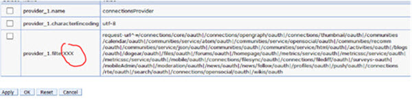
Configure the WebSphere OIDC Trust Association Interceptor (TAI) – Single Cluster
In the WebSphere Admin Console go to Security > Global security > Trust association > Interceptors > com.ibm.ws.security.oidc.client.RelyingParty and configure the custom TAI properties as follows
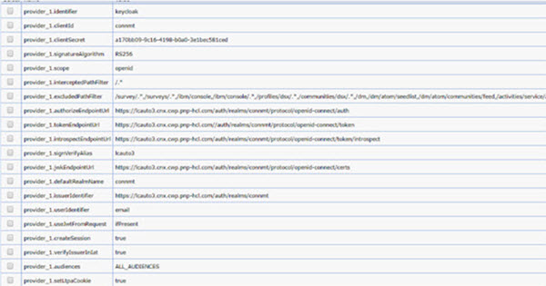
TAI custom property
Configure the WebSphere OIDC Trust Association Interceptor (TAI) – Multi-Cluster
A Connections medium or large deployment consists of multiple clusters (JVMs), each containing a number of applications. There is a limitation in the WebSphere OIDC RP, where the RP stores the state in local JVM. This means the Keycloak callback needs to return to the same JVM where application login started. We have the following request into IBM to fix this issue. Please help by voting for it.
To resolve this issue the workaround is to install the WebSphereOIDCRP.ear in each cluster and configure WebSphere TAI properties for each mapping to the corresponding servlet context root. Our examples below are based on a Connections medium deployment 4 cluster configuration.
Connections Configuration
Perform the following updates to Connections configuration files to complete enabling the Keycloak clients as the Connections OIDC provider. Updating the Mobile Configuration Properties Update the mobile-config.xml with the property values below by following the instructions in the Changing Mobile configuration property values topic.
Verify the change is correct by selecting the URL: https://<server>/mobile/homepage/SecurityConfiguration?debug=true and validate that the values are reflected in the JSON that is returned.
Updating the LotusConnections-config.xml oidc_op service Update the LotusConnections-config.xml for the serviceName="oidc_op" with the property values below by following the instructions found in the Editing Configuration Files topic. Note: You will need to edit the LotusConnections-config.xml file directly.
<sloc:serviceReference bootstrapHost="admin_replace" bootstrapPort="admin_replace" clusterName="" enabled="true" serviceName="oidc_op" ssl_enabled="true">
<sloc:href>
<sloc:hrefPathPrefix>/auth/realms/<keycloak_realm>/.well-known/openid-configuration</sloc:hrefPathPrefix>
<sloc:static href="http://<keycloak_server>" ssl_href="https://<keycloak_server>"/>
<sloc:interService href="https://<keycloak_server>"/>
</sloc:href>
</sloc:serviceReference>